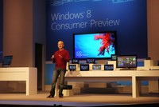
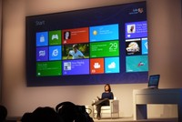
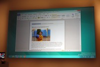
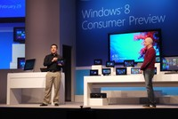

Microsoft quiere hacer que Windows 8 sea una herramienta sin compromisos para tu PC, sin importar donde vayas o donde quieras usarlo, por eso Windows 8 es escalable, presente en teléfonos (Windows Phone 7), tablets y PC. Un sistema operativo global. Todo Windows 8, desde el core hasta la interfaz se ha rediseñado, se ha mejorado hasta llegar a un punto en el que la facilidad y la compatibilidad sea una prioridad. Sinofsky comenta que se han hecho más de 100.000 cambios en el código con respecto a la Developer...

Microsoft quiere hacer que Windows 8 sea una herramienta sin compromisos para tu PC, sin importar donde vayas o donde quieras usarlo, por eso Windows 8 es escalable, presente en teléfonos (Windows Phone 7), tablets y PC. Un sistema operativo global. Todo Windows 8, desde el core hasta la interfaz se ha rediseñado, se ha mejorado hasta llegar a un punto en el que la facilidad y la compatibilidad sea una prioridad. Sinofsky comenta que se han hecho más de 100.000 cambios en el código con respecto a la Developer Preview de Windows 8, lo que lleva a Microsoft a un nuevo récord de cambios desde Windows 7, uno de los Windows mejor vendidos.
La escabilidad en diferentes tamaños es bastante importante, piensa en todas las tablets y tipos de pantallas que existen y en los que Microsoft quiere estar, teniendo en cuenta que las apps son lo más importante de los sistemas operativos, las nuevas aplicaciones Metro de Microsoft son escalables, en cualquier Windows 8 se verá bien, sin importar la resolución. Otra de las promesas de la compañía es que este nuevo Windows podrá arrancar desde apagado en tan solo 8 segundos, una mejora increible con respecto a Windows 7, aunque hay que tener en cuenta que hace falta un ordenador con UEFI, y que las unidades SSD también serán una gran ayuda para alcanzar esa velocidad de arranque.

Windows 8 en PCs sin pantalla táctil

Lo importante de Windows 8 es que esté disponible en toda clase de dispositivos, ¿pero que pasa cuando quieres usarlo en tu PC tradicional? En ese que no tiene una pantalla táctil y que necesitas todos los días. Windows 8 no cambia de interfaz, simplemente pone unas opciones de interfaz que facilitan el uso con el ratón.
El botón de Inicio cambia radicalmente, desaparece de la pantalla principal con la interfaz Metro, tan solo tienes que mover el ratón a la parte intefior izquierda, donde tradicionalmente está el botón y te llevará directamente a la pantalla de inicio de la interfaz Metro, no te lleva al escritorio normal como se podría pensar. Y tan solo tienes que ver la imagen de abajo, el botón tradicional de Windows desaparece.

La búsqueda en Windows 8 llega integrada en todo el sistema operativo y en las aplicaciones que vienen preinstaladas, dando más información de lo que podría ser buscar un documento en tu PC, puedes buscar en servicios y en internet aparte de tu disco duro.
Lo que queda claro es algo, Microsoft no puede ni deja de lado el escritorio normal, lo adapta a tiempos modernos.
Windows 8 bajo ARM

Pero la pregunta del millón es… ¿cómo funciona Windows 8 bajo una plataforma ARM? Microsoft dejó helado el mundo de la tecnología al avisar que Windows 8 sería compatible con la plataforma ARM, que hasta ahora hemos visto en smartphones y tablets. Es decir, las tablets de Windows 8 no tienen porque ser basadas en procesadores de Intel que suelen generar más calor y son más grandes, aunque ganas de potencia final.
El resultado está siendo bastante bueno, en la presentación se han mostrado terminales usando plataforma de Intel basada en x86, de Qualcomm o de NVIDIA usando NVIDIA Tegra 3 y el funcionamiento es básicamente idéntico.
“Tocarlo todo”
Lo que Microsoft quiere hacer con Windows 8 es que sea un sistema operativo que empiece a promover los PCs con pantalla táctiles, y estamos hablando tanto tablets, “todo en uno”, portátiles, ultrabooks y pantallas táctiles conectadas a torres. Quizá sea algo apresurado decirlo, pero no tiene mucho sentido tener todo táctil, por lo menos ahora.
Por desgracia tenemos la experiencia de los ordenadores “Tablet PC”, cuyas ventas no fueron muy decentes porque en esencia, un portátil con una pantalla táctil que siempre está puesta en un modo como el que está en un portátil, fisicamente fija al teclado sin poder ponerlo en una mesa como si fuese una tablet, acaba cansando.
No imagino a todo el mundo funcionando con PCs táctiles, existe una teoría que dice que cualquier gesto que requiera que nuestros brazos estén un largo tiempo estirados por encima del nivel del corazón cansa, simplemente no es cómodo. Se entiende que Windows 8 está preparado para ambos sistemas: pantallas táctiles y uso con ratón y teclado.
En definitiva, un sistema operativo compatible con diferentes plataformas, menso en los smartphones. Las tablets ahora tienen un sistema operativo más que usar, quizá no sea tan rápido como se espera de una maquina Windows, pero lo bueno es exactamente eso, que se tendría una maquina Windows con una interfaz adaptada para usar con dedos, y si quieres, conectar un ratón y teclado para usarlo más cómodo.